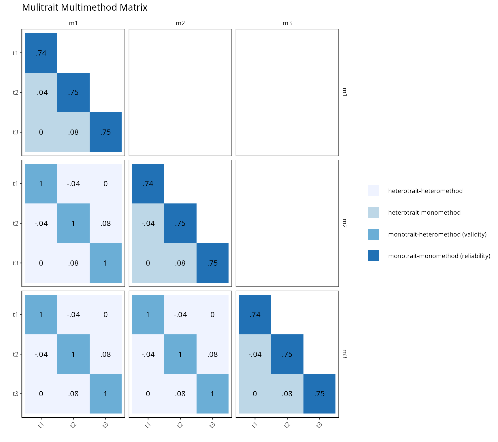
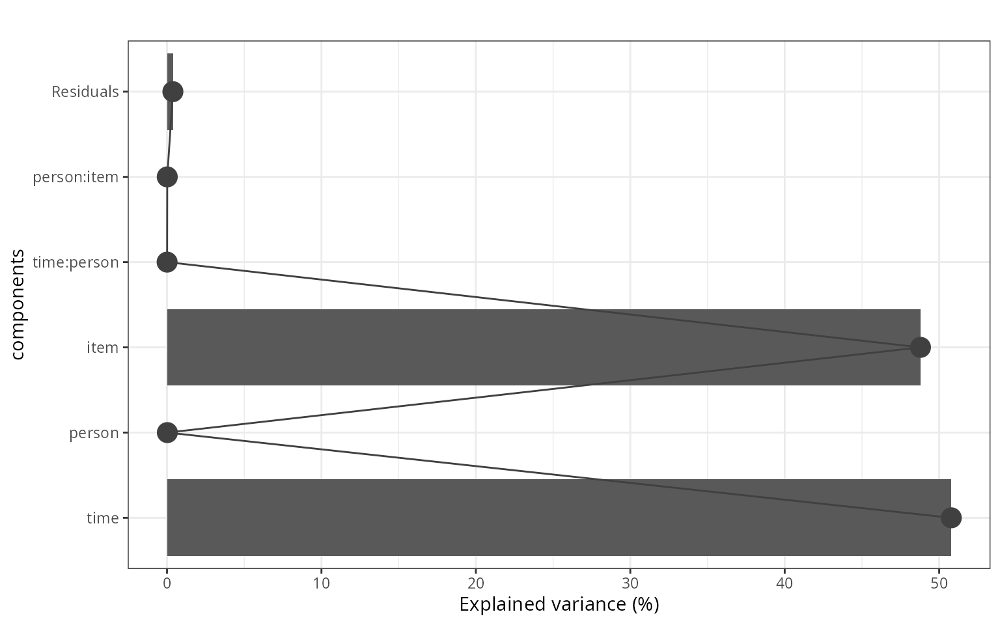

Description
This shows the output of reliability and validity functions from the package rwf. The functions include Cronbach’s alpha and its item-level diagnostics, a Multitrait-Multimethod (MTMM) matrix for convergent and discriminant validity, and variance-components-based reliability (Shrout-Fleiss) for person × item × time measurement designs.
Installation instructions for rwf can be found here
The code can be found here
Theoretical Background
Cronbach’s alpha
Cronbach’s alpha estimates internal consistency — how much the items of a scale covary, as a proxy for how much they all measure the same underlying construct:
\alpha = \frac{k}{k-1}\left(1-\frac{\sum \text{diag}(\Sigma)}{\sum \Sigma}\right)
where k is the number of items and \Sigma is their covariance matrix. Conventionally, \alpha \geq 0.70 is considered acceptable for research purposes and \geq 0.80 for applied/clinical decisions — though alpha can be inflated merely by adding more items, regardless of whether they add real construct coverage (Cortina, 1993).
Item-total correlation (r) is each
item’s correlation with the total scale score (which includes that
item); corrected item-total correlation /
r-drop excludes the item from the total before
correlating, avoiding the artificial inflation of correlating an item
with a sum that already contains it. Items with r-drop below ~0.30 are
usually flagged as poor scale members.
Alpha-if-item-removed shows what alpha would be without
each item — an item whose removal increases alpha is actively
hurting the scale’s internal consistency.
Multitrait-Multimethod (MTMM) matrix
Campbell & Fiske (1959)’s MTMM design measures several traits using several methods, then examines four types of correlation among the resulting scale scores:
| Type | Same trait? | Same method? | Interpretation |
|---|---|---|---|
| Monotrait-monomethod | ✓ | ✓ | Reliability (this is Cronbach’s alpha) |
| Monotrait-heteromethod | ✓ | ✗ | Convergent validity — different methods measuring the same trait should agree |
| Heterotrait-monomethod | ✗ | ✓ | Method variance — different traits measured the same way should not agree strongly |
| Heterotrait-heteromethod | ✗ | ✗ | Discriminant validity — the weakest correlations of all, since neither trait nor method is shared |
Good construct validity shows high monotrait-heteromethod correlations (convergence) and low heterotrait correlations of both kinds (discrimination).
Generalizability theory and Shrout-Fleiss reliability
When a measurement design has multiple facets of variation (e.g. multiple raters/items and multiple time points), classical reliability doesn’t distinguish between different sources of unreliability. Extracting variance components from a mixed model (person, item, time, and their interactions) lets you compute several distinct reliability coefficients (Shrout & Fleiss, 1979) tailored to how scores will actually be used — a single measurement vs. an average of several, at fixed vs. randomly-sampled time points.
Cronbach’s Alpha
set.seed(12345)
cm <- matrix(.5, ncol = 6, nrow = 6)
diag(cm) <- 1
df_items <- round(generate_correlation_matrix(cm, nrows = 1000), 0) + 5
psych::alpha(df_items)$total$raw_alpha## [1] 0.8375375
compute_raw_alpha(df = df_items)## [1] 0.8375375compute_raw_alpha matches psych::alpha’s
raw alpha exactly, computed directly from the covariance-matrix formula
above rather than via psych’s more elaborate internals.
Item diagnostics
compute_alpha_diagnostics(df = df_items)## item alpha.if.item.removed item.total.correlation item.total.correlation.r.drop
## X1 X1 0.8172775 0.7188293 0.5813271
## X2 X2 0.8074691 0.7577507 0.6305662
## X3 X3 0.8050188 0.7678537 0.6423391
## X4 X4 0.8133327 0.7328541 0.6014236
## X5 X5 0.8129389 0.7358393 0.6034345
## X6 X6 0.8106911 0.7430253 0.6148351Every item here shares the same 0.5 pairwise correlation by
construction, so alpha-if-removed and the item-total correlations are
near-identical across items — in a real scale, an item with a notably
lower item.total.correlation.r.drop than the rest would be
the first candidate for removal.
Scale score mean and SD
compute_mean_sd_alpha(df_items)## MEAN SD
## 1 5.006833 0.7683419
compute_mean_sd_alpha(df_items, divisor = 100)## Mean SD
## 1 0.30041 0.04610051With divisor = NULL (default) the scale score is the row
mean; with a divisor supplied, it’s the row sum divided by
that value instead — e.g. dividing by the maximum possible sum score to
express results as a proportion.
Full Alpha Report
report_alpha runs psych::alpha across one
or more named scales at once (with optional item reversal and bootstrap
CIs), returning scale-level, item-level, and alpha-if-dropped tables
together.
key <- list(f1 = c("X1", "X2", "X3"), f2 = c("X4", "X5", "X6"))
result <- report_alpha(df = df_items, key = key, check.keys = FALSE, n.iter = 2)
result$result_total[, c("dimension", "items", "raw_alpha", "alpha_criterion")]## dimension items raw_alpha alpha_criterion
## 1 f1 3 0.7247834 Good and Acceptable
## 2 f2 3 0.7093562 Good and Acceptable
result$result_item_statistics[, c("dimension", "question", "raw_alpha")]## dimension question raw_alpha
## 1 f1 X1 0.7247834
## 2 f1 X2 0.7247834
## 3 f1 X3 0.7247834
## 4 f2 X4 0.7093562
## 5 f2 X5 0.7093562
## 6 f2 X6 0.7093562The alpha_criterion column classifies each scale from
“Unacceptable” (<0.60) through “Excellent” (>0.90), giving an
immediate at-a-glance verdict alongside the numeric alpha.
MTMM Matrix
plot_mtmm requires long-format data (one row per subject
per method) with the same trait items repeated under each method.
set.seed(12345)
population_model <- "t1=~x1+.9*x2+.9*x3
t2=~x4+.9*x5+.9*x6
t3=~x7+.9*x8+.9*x9"
model_data <- lavaan::simulateData(population_model, sample.nobs = 1000)
model_data <- model_data[sample(1:1000, 1000, TRUE), ]
model_data <- rbind(model_data, model_data, model_data)
model_data$method <- c(rep("m1", 1000), rep("m2", 1000), rep("m3", 1000))
model_data$id <- rep(1:1000, 3)
key_mtmm <- list(t1 = paste0("x", 1:3), t2 = paste0("x", 4:6), t3 = paste0("x", 7:9))
plot_mtmm(df = model_data, key = key_mtmm, method = "method", subject = "id")
Here, the same three latent traits were simply duplicated across
three “methods” (m1–m3 are actually identical
copies of the same data), so this is a best-case, idealized MTMM:
monotrait-monomethod cells (diagonal, reliability) and
monotrait-heteromethod cells (convergent validity) should both come out
high, since there’s no real method variance in this simulation.
key_to_cfa_model converts the same key list
format into lavaan CFA syntax, for fitting a formal
confirmatory model on the same trait structure:
cat(key_to_cfa_model(key_mtmm))## t1 =~ x1+x2+x3
## t2 =~ x4+x5+x6
## t3 =~ x7+x8+x9Variance Components and Shrout-Fleiss Reliability
extract_components pulls variance components out of a
mixlm::lm mixed model (person, item, time, and their
interactions specified with r(...)), reporting each
component’s percentage of total variance.
design <- expand.grid(time = 1:3, item = 1:3, person = 1:10)
design <- change_data_type(design, type = "factor")
design$response <- rowSums(change_data_type(design[, 1:2], type = "numeric")) + rnorm(90, 0, 0.1)
model_vc <- mixlm::lm(response ~ r(time) * r(person) + r(item) * r(person), data = design)
result_vc <- extract_components(model_vc)
result_vc$components## component VC vc_percent
## 1 time 1.0724072562 50.784203370
## 2 person 0.0004681186 0.022167913
## 3 item 1.0302981750 48.790113785
## 4 time:person -0.0001423573 0.006741379
## 5 person:item -0.0003358241 0.015903061
## 6 Residuals 0.0080428214 0.380870492
result_vc$plot
compute_shrout then converts these variance components
into the five Shrout-Fleiss reliability coefficients:
vc <- result_vc$components
compute_shrout(
sperson = vc[vc$component == "person", "VC"],
spersonitem = vc[vc$component == "item:person", "VC"],
stime = vc[vc$component == "time", "VC"],
spersontime = vc[vc$component == "time:person", "VC"],
serror = vc[vc$component == "Residuals", "VC"],
m = 3, k = 3
)## measure result description
## 1 r1f -0.05607748 Reliability (between persons) of measures taken on the same fixed k time
## 2 r1r -0.05607748 Reliability (between persons) of measures taken on the same random k time
## 3 rc -0.05607748 Reliability (within persons) of change
## 4 rkf -0.05607748 Reliability (between persons) of average measures taken over fixed m items and fixed k times
## 5 rkr -0.05607748 Reliability (between persons) of different random time with same number of points k between periods- r1f/r1r: reliability of a single measurement, at fixed vs. random time points.
-
rkf/rkr: reliability of scores averaged
over
mitems andktime points — always at least as high as the single-measurement coefficients, since averaging reduces error. - rc: reliability of change across time — a different question from the others (how confidently can you say a person’s score has changed?), directly tied to the person×time interaction variance.
Conclusion
compute_raw_alpha/compute_alpha_diagnostics/report_alpha
cover classical internal-consistency reliability at both the scale and
item level; plot_mtmm/key_to_cfa_model extend
reliability into a full construct-validity design distinguishing
convergent from discriminant validity; and
extract_components/compute_shrout bring in
generalizability theory for measurement designs with multiple facets of
variation (raters, items, and time), producing reliability coefficients
tailored to exactly how the scores will be used.
Rendered with R 4.6.1